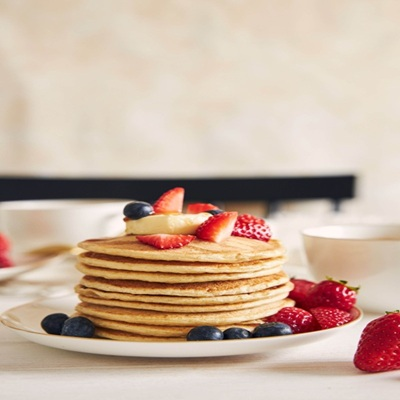

Joint Photographic Experts Group (JPG)
Image Description
A stack of golden-brown pancakes is placed on a plate with fresh strawberries, blueberries, and a banana. In addition to the neatly arranged pancakes, the blurred background featuring a cup suggests a breakfast setting.
Image File Type
This image is a JPG. The Joint Photographic Experts Group (JPG) format is one of the most widely used and compatible formats for photography. JPG files use lossy compression, discarding some data to reduce file size. The file extension for JPG files is ".jpg."
Reason For Choosing The Image
JPG images are extremely common and easy to find. Since food photography is often shared online in this format, what better way to showcase it than with an image of food?
Source
Image is from FREEPIK